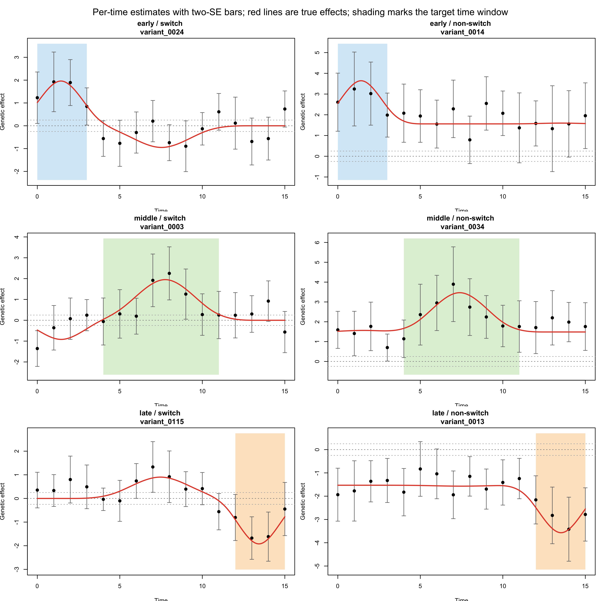
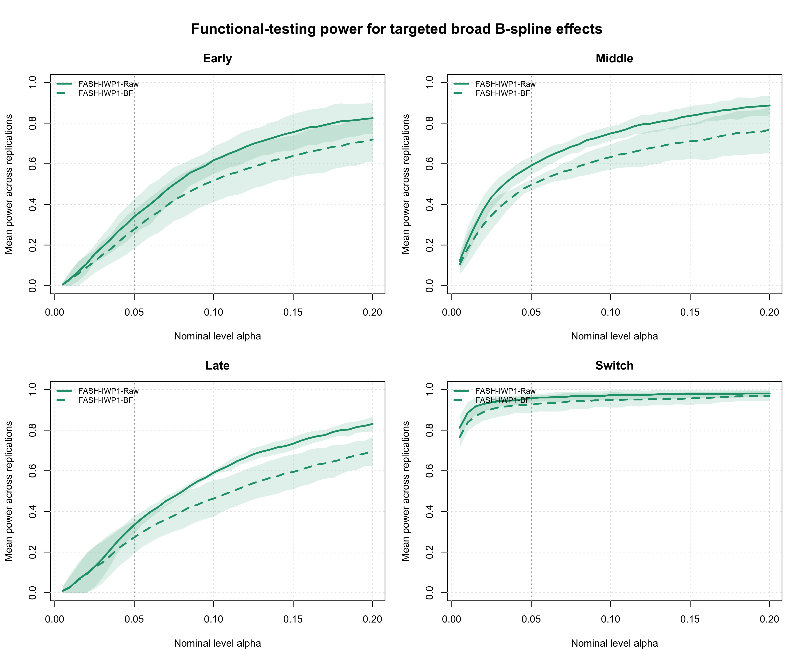
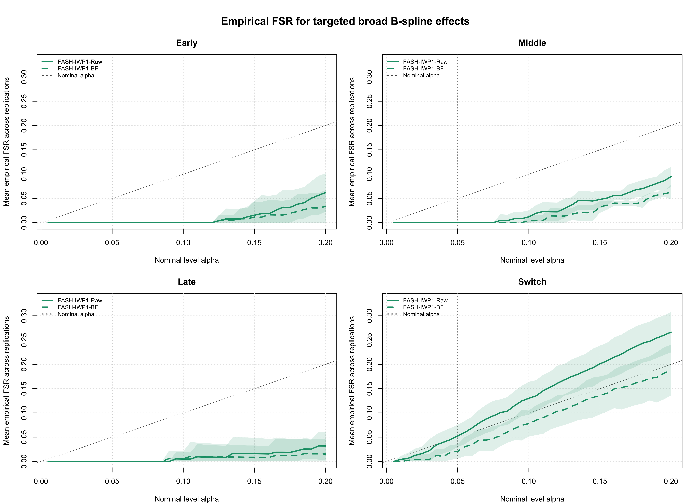
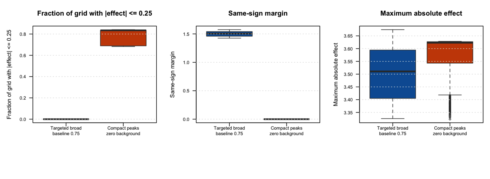
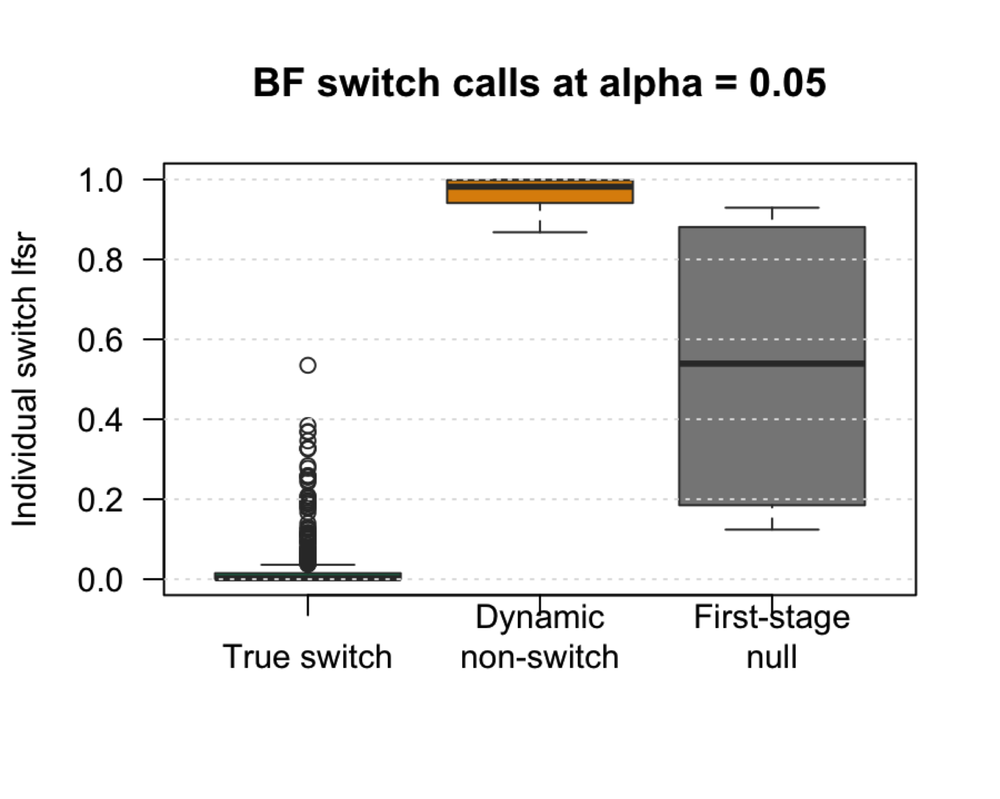
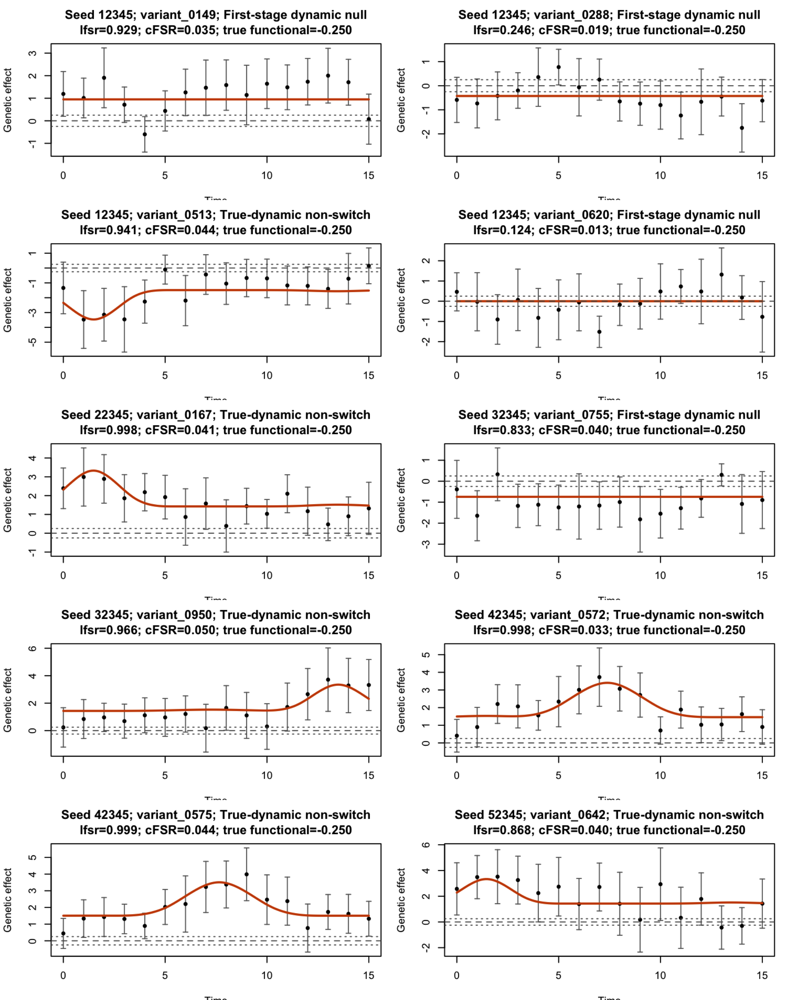

Last updated: 2026-07-29
Checks: 6 1
Knit directory: coderepo-local/
This reproducible R Markdown analysis was created with workflowr (version 1.7.2). The Checks tab describes the reproducibility checks that were applied when the results were created. The Past versions tab lists the development history.
The R Markdown is untracked by Git. To know which version of the R
Markdown file created these results, you’ll want to first commit it to
the Git repo. If you’re still working on the analysis, you can ignore
this warning. When you’re finished, you can run
wflow_publish to commit the R Markdown file and build the
HTML.
Great job! The global environment was empty. Objects defined in the global environment can affect the analysis in your R Markdown file in unknown ways. For reproduciblity it’s best to always run the code in an empty environment.
The command set.seed(20251109) was run prior to running
the code in the R Markdown file. Setting a seed ensures that any results
that rely on randomness, e.g. subsampling or permutations, are
reproducible.
Great job! Recording the operating system, R version, and package versions is critical for reproducibility.
Nice! There were no cached chunks for this analysis, so you can be confident that you successfully produced the results during this run.
Great job! Using relative paths to the files within your workflowr project makes it easier to run your code on other machines.
Great! You are using Git for version control. Tracking code development and connecting the code version to the results is critical for reproducibility.
The results in this page were generated with repository version 9fbd863. See the Past versions tab to see a history of the changes made to the R Markdown and HTML files.
Note that you need to be careful to ensure that all relevant files for
the analysis have been committed to Git prior to generating the results
(you can use wflow_publish or
wflow_git_commit). workflowr only checks the R Markdown
file, but you know if there are other scripts or data files that it
depends on. Below is the status of the Git repository when the results
were generated:
Ignored files:
Ignored: .DS_Store
Ignored: .Rhistory
Ignored: .Rproj.user/
Ignored: analysis/.DS_Store
Ignored: analysis/.Rhistory
Ignored: analysis/site_libs/
Ignored: code/.DS_Store
Ignored: code/.Rhistory
Ignored: data/appendixB/
Ignored: data/dynamic_eQTL_real/
Ignored: data/toy_example/
Ignored: output/dynamic_eQTL_real/
Ignored: output/pdf/
Ignored: output/revision_simulations/
Untracked files:
Untracked: Rplots.pdf
Untracked: analysis/revision_combined_spiky_genotype_simulation.rmd
Untracked: analysis/revision_functional_testing_simulation.rmd
Untracked: analysis/revision_genotype_level_simulation.rmd
Untracked: analysis/revision_internal_targeted_broad_calibration.rmd
Untracked: code/00_eQTLs_CL.R
Untracked: code/01_fash_CL.R
Untracked: code/01_fash_CL.sbatch
Untracked: code/09_penalty_sensitivity.R
Untracked: code/09_penalty_sensitivity.sbatch
Untracked: code/diagnose_switch_functional.R
Untracked: code/investigate_switch_miscalibration.R
Untracked: code/make_multispike_truth_preview.R
Untracked: code/make_revision_power_alpha_plots.R
Untracked: code/plot_false_switch_examples.R
Untracked: code/revision_simulation_harness.R
Untracked: code/run_combined_spiky_genotype_simulation.R
Untracked: code/run_functional_testing_bspline_mc_replication.R
Untracked: code/run_genotype_level_revision_simulation.R
Untracked: code/run_internal_direct_advantage_screen.R
Untracked: code/run_internal_multipeak_factorial_simulation.R
Untracked: code/run_internal_spiky_bf_width_screen.R
Untracked: code/run_internal_spiky_maxabs_switch_sensitivity.R
Untracked: code/run_internal_spiky_truth_replacement.R
Untracked: code/run_random_bspline_mc_replication.R
Untracked: code/run_revision_targeted_simulations.R
Untracked: code/run_spiky_functional_testing_mc_replication.R
Untracked: code/run_spiky_signal_strength_pilot.R
Untracked: code/run_spiky_transient_mc_replication.R
Untracked: code/run_switch_noise_ablation.R
Untracked: code/run_switch_non_switch_baseline_ablation.R
Untracked: code/run_switch_se_correction_ablation.R
Untracked: code/run_targeted_local_bspline_truth_pilot.R
Untracked: code/summarize_internal_direct_advantage_confirmation.R
Untracked: code/summarize_internal_dynamic_main_effect_screen.R
Untracked: code/summarize_internal_functional_smoothness_screen.R
Untracked: code/summarize_internal_multipeak_factorial_confirmation.R
Untracked: code/summarize_internal_reviewer_spiky_width_confirmation.R
Untracked: code/summarize_internal_spiky_bf_confirmation.R
Untracked: code/summarize_internal_spiky_truth_replacement.R
Untracked: code/summarize_internal_spiky_width_confirmation.R
Untracked: code/summarize_internal_targeted_broad_calibration_diagnostic.R
Untracked: fash_prior_comparison_order1_after.pdf
Untracked: fash_prior_comparison_order1_after.png
Untracked: fash_prior_comparison_order1_before.pdf
Untracked: fash_prior_comparison_order1_before.png
Untracked: fash_prior_comparison_order2_after.pdf
Untracked: fash_prior_comparison_order2_after.png
Untracked: fash_prior_comparison_order2_before.pdf
Untracked: fash_prior_comparison_order2_before.png
Unstaged changes:
Modified: .gitignore
Modified: analysis/dynamic_eQTL_real.rmd
Modified: analysis/index.Rmd
Modified: analysis/nonlinear_dynamic_eQTL_real.Rmd
Modified: output/toy_example/toy_example_11.pdf
Modified: output/toy_example/toy_example_12.pdf
Modified: output/toy_example/toy_example_21.pdf
Modified: output/toy_example/toy_example_22.pdf
Note that any generated files, e.g. HTML, png, CSS, etc., are not included in this status report because it is ok for generated content to have uncommitted changes.
There are no past versions. Publish this analysis with
wflow_publish() to start tracking its development.
Internal temporary analysis. This page is not part of the formal reviewer-facing workflowr navigation.
This genotype-level simulation evaluates early, middle, late, and switch functional testing under a labelled non-IWP B-spline truth. For donor \(i\), variant \(j\), and time \(t\), expression is generated as
\[ Y_{ijt} = \alpha_{jt} + G_{ij}\beta_j(t) + X_i^T\gamma_{jt} + \epsilon_{ijt}, \qquad \epsilon_{ijt} \sim N(0,1). \]
Each dataset has 19 donors, 16 time points,
1000 variants, and five PC-like covariates. Exactly
200 variants are dynamic, 400 have constant
effects, and 400 have zero effects. Per-time effects and
standard errors are estimated from
Y ~ G + PC1 + PC2 + PC3 + PC4 + PC5, followed by the
real-data t-statistic correction with
\[ \mathrm{df} = 19 - 7 = 12. \]
The results average five independently simulated datasets with seeds
12345, 22345, 32345,
42345, and 52345.
Dynamic effects are broad local cubic B-spline curves with maximum
absolute effect 2. They are split as evenly as possible
among the six strata formed by early, middle, or late timing crossed
with switch or non-switch status.
Early, middle, and late mean that the largest absolute effect occurs
on days 0–3, 4–11, or 12–15. A switch curve has both a positive and a
negative effect exceeding the manuscript threshold \(c = 0.25\). For non-switch curves, a
same-signed baseline equal to 0.75 times the primary
amplitude keeps the trajectory away from zero. All labels are validated
on a refined time grid before expression data are generated.
One representative trajectory is shown for each truth stratum. Points are the per-time effect estimates used by FASH, bars show two corrected standard errors, and red lines are the continuous true effects. The shaded region marks the time window used by the early, middle, or late functional.

At each nominal level \(\alpha\),
both FASH-IWP1-Raw and FASH-IWP1-BF use the
same three-stage rule:
testing_functional() using posterior samples.Power is the fraction of true members of a functional class that are called. Empirical FSR is the fraction of all reported calls whose true functional is non-positive. The empirical FSR therefore includes both functional misclassification among dynamic eQTLs and errors inherited from the first dynamic-eQTL selection stage.
| Target | Method | Mean calls | Power (95% MC CI) | Empirical FSR (95% MC CI) |
|---|---|---|---|---|
| Early | FASH-IWP1-Raw | 22.8 | 0.340 [0.253, 0.428] | 0.000 [0.000, 0.000] |
| Early | FASH-IWP1-BF | 18.6 | 0.278 [0.183, 0.373] | 0.000 [0.000, 0.000] |
| Middle | FASH-IWP1-Raw | 39.6 | 0.591 [0.548, 0.634] | 0.000 [0.000, 0.000] |
| Middle | FASH-IWP1-BF | 33.2 | 0.496 [0.468, 0.523] | 0.000 [0.000, 0.000] |
| Late | FASH-IWP1-Raw | 22.0 | 0.333 [0.289, 0.377] | 0.000 [0.000, 0.000] |
| Late | FASH-IWP1-BF | 18.0 | 0.273 [0.193, 0.353] | 0.000 [0.000, 0.000] |
| Switch | FASH-IWP1-Raw | 102.0 | 0.956 [0.934, 0.979] | 0.052 [0.029, 0.076] |
| Switch | FASH-IWP1-BF | 95.4 | 0.925 [0.885, 0.964] | 0.021 [0.006, 0.035] |
For BF-updated FASH, mean switch power is 0.925 and mean
empirical switch FSR is 0.021. Early, middle, and late
empirical FSR estimates are zero in these five replications.


The diagonal is the nominal level. The ribbons are 95% Monte Carlo confidence intervals across the five seeds. The near-zero early, middle, and late curves mean that no false calls occurred for those targets in this pilot; they should not be interpreted as high-precision estimates of a zero error rate.
The true first-stage dynamic-null proportion is \(\pi_0 = 0.8\). The table shows the fitted constant-component weight before and after BF updating.
| Fit | Mean estimated dynamic-null proportion (95% MC CI) |
|---|---|
| Raw | 0.785 [0.772, 0.798] |
| BF-corrected | 0.873 [0.866, 0.880] |
| Setting | Curves | Median near-zero fraction | Median same-sign margin | Median maximum absolute effect |
|---|---|---|---|---|
| Targeted broad; baseline 0.75 | 495 | 0.000 | 1.505 | 3.511 |
| Compact peaks; zero background | 750 | 0.834 | 0.000 | 3.623 |

The maximum effect sizes are similar in the targeted-broad and compact-peak settings. The main geometric difference is sign separation: targeted non-switch curves have a large same-sign margin, whereas compact zero-background curves spend most of the evaluation grid inside \([-0.25,0.25]\). Consequently, isolated posterior excursions across zero are much less likely to turn a true non-switch trajectory into a switch call in the targeted-broad setting.
At \(\alpha = 0.05\), BF-updated FASH makes 10 false switch calls across the five replications.
| Source | False switch calls across five seeds |
|---|---|
| First-stage dynamic null | 4 |
| True-dynamic non-switch | 6 |
| Truth class among BF switch calls | Calls | Median individual lfsr | Individual lfsr range |
|---|---|---|---|
| True switch | 467 | 0.002 | 0.000 - 0.535 |
| True-dynamic non-switch | 6 | 0.982 | 0.868 - 0.999 |
| First-stage dynamic null | 4 | 0.539 | 0.124 - 0.929 |

The six called dynamic non-switch variants have a median individual
switch lfsr of 0.982. They enter only because the
cumulative FSR rule averages their high lfsr values with many highly
confident true-switch calls. Their realized frequency nevertheless
remains within the aggregate error budget.
The red lines are the true effects; titles report the individual lfsr, cumulative FSR at the call boundary, and true switch functional.

The six true-dynamic non-switch examples remain one-signed. The other four errors are constant or zero variants that passed the first-stage dynamic-eQTL screen.
The current-code run closely reproduces the original five-seed cache.
| Run | Mean dynamic discoveries | Mean switch calls | Switch power | Empirical switch FSR |
|---|---|---|---|---|
| Original cached run | 130.6 | 95.2 | 0.925 | 0.019 |
| Current-code reproduction | 130.6 | 95.4 | 0.925 | 0.021 |
The one-call difference is consistent with posterior Monte Carlo variation near the cumulative FSR boundary.
In this targeted-broad setting, BF-updated FASH has mean empirical FSR below the nominal level across the evaluated alpha grid and retains high switch power. Raw FASH is also conservative for early, middle, and late calls, but its switch FSR exceeds the nominal level as alpha increases. Calibration is especially favorable after BF updating because true non-switch trajectories are clearly same-signed; this does not imply that controlling the global dynamic-null proportion alone guarantees calibration for every functional hypothesis.
The five-seed cache was generated with:
Rscript --vanilla code/run_functional_testing_bspline_mc_replication.R \
--J 1000 \
--seed-list 12345,22345,32345,42345,52345 \
--truth-mechanism targeted_local_bspline \
--targeted-profile broad \
--dynamic-amplitude 2 \
--minimum-location-margin 0.60 \
--minimum-location-ratio 1.4 \
--non-switch-baseline-fraction 0.75 \
--non-switch-background-fraction 0.05 \
--output-id internal_targeted_broad_calibration_pilot5 \
--num-cores 2 \
--cache-full-fits trueThe diagnostic tables and figures were generated with:
Rscript --vanilla \
code/summarize_internal_targeted_broad_calibration_diagnostic.RCached outputs are stored under:
output/revision_simulations/mc/internal_targeted_broad_calibration_pilot5/
output/revision_simulations/internal/targeted_broad_functional_calibration_diagnostic/
sessionInfo()R version 4.5.1 (2025-06-13)
Platform: aarch64-apple-darwin20
Running under: macOS Sequoia 15.6.1
Matrix products: default
BLAS: /System/Library/Frameworks/Accelerate.framework/Versions/A/Frameworks/vecLib.framework/Versions/A/libBLAS.dylib
LAPACK: /Library/Frameworks/R.framework/Versions/4.5-arm64/Resources/lib/libRlapack.dylib; LAPACK version 3.12.1
locale:
[1] C.UTF-8/C.UTF-8/C.UTF-8/C/C.UTF-8/C.UTF-8
time zone: America/Chicago
tzcode source: internal
attached base packages:
[1] stats graphics grDevices utils datasets methods base
loaded via a namespace (and not attached):
[1] vctrs_0.7.3 cli_3.6.6 knitr_1.50 rlang_1.2.0
[5] xfun_0.55 stringi_1.8.7 otel_0.2.0 png_0.1-8
[9] promises_1.5.0 jsonlite_2.0.0 workflowr_1.7.2 glue_1.8.1
[13] git2r_0.36.2 rprojroot_2.1.1 htmltools_0.5.9 httpuv_1.6.16
[17] sass_0.4.10 rmarkdown_2.30 grid_4.5.1 jquerylib_0.1.4
[21] evaluate_1.0.5 tibble_3.3.0 fastmap_1.2.0 yaml_2.3.12
[25] lifecycle_1.0.5 stringr_1.6.0 compiler_4.5.1 fs_1.6.6
[29] Rcpp_1.1.1-1.1 pkgconfig_2.0.3 rstudioapi_0.17.1 later_1.4.4
[33] digest_0.6.39 R6_2.6.1 pillar_1.11.1 magrittr_2.0.5
[37] bslib_0.9.0 tools_4.5.1 cachem_1.1.0